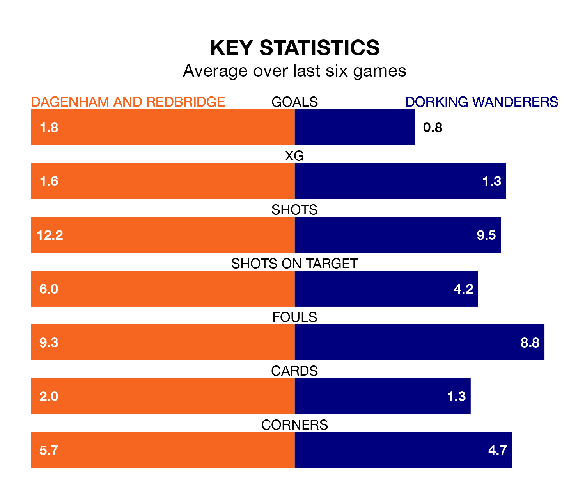

Dagenham and Redbridge are heavy favourites to keep all three points at home in Tuesday's late kick-off against Dorking Wanderers.
Dagenham & Redbridge, who sit 18th in National League with 27 games played, are priced at 1.6 to seal victory at the Chigwell Construction Stadium.
Despite sitting one place and one point ahead of them in the table, Dorking are 4.4 to win with *Betting Company*, while the draw is at 3.8.
Dagenham & Redbridge are in disappointing form in National League, with one win and two draws from their last six games.
With two wins and four losses over that period, Dorking's form is slightly better – they have taken six points from 18, compared to the home side's five.
With 31 goals in 27 games so far this season, Wanderers are scoring at below the league average rate with 1.1 goals per game. And they are conceding more than average, letting in 45 goals at a rate of 1.7 per game.
Dagenham & Redbridge are also below average scorers, with 1.3 goals per game, compared to a league average of 1.5. They have conceded 1.4 goals per game.
In the last three years, Dagenham & Redbridge and Dorking have played each other on three occasions. Dagenham & Redbridge won one of them and Dorking the other.
Their last meeting was on November 4, when Dagenham & Redbridge won 3-1 away.
Dagenham & Redbridge's last match was on January 9, a 2-1 loss against Barnet, with Joshua David Rees getting the goal for Dagenham & Redbridge.
Dorking beat Gateshead 1-0 last time out, on Saturday, with Charlie Carter on the scoresheet.
Updated: 09:18 (UTC), 23/01/24